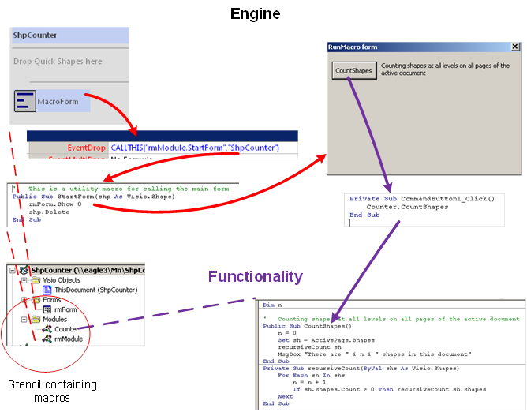
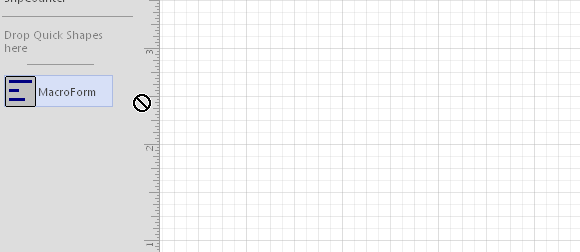

Идея - вынести макросы из основного документа в трафарет - не нова и используется довольно часто. Понятно, что она не всегда осуществима. Например, те же обработчики событий поневоле будут размещены в основном документе. Но существует множество документов, в которых нет специальных обработчиков. Кроме того, бывают вообще "инструментальные" макросы, который не связаны с определенным документом, а реализуют некоторые универсальные операции, типа формирования универсального отчета, подсчет шейпов, мастеров и т.д. Уж они-то прямо напрашиваются для выноса в трафарет.
Однако запуск макроса из трафарета несколько неприятен.

Во-первых, при запуске показываются макросы только из основного документа. Чтобы добавить в список макросы из трафарета, нужно лишний раз щелкнуть мышкой. Во-вторых, из-за добавления к имени макроса имени трафарета и модуля названия разрастаются и не так-то просто быстро найти в длинном списке нужное имя. Поэтому возникает естественное желание "облагородить" процесс запуска.
Ниже как раз пойдет речь об одном из возможных способов повышения удобства запуска макросов из трафарета. Вот схема всей конструкции.

В данном примере вся функциональная часть размещается в модуле Counter. Именно там находятся макросы, из-за которых все затевается. Естественно, функциональных модулей может быть много.
Дополнительная нагрузка представлена модулем rmModule (там всего несколько строк кода) и формой rmForm. И в самом трафарете помимо программной начинки имеется один мастер-шейп - MacroForm. Это так называемый "движок", который может быть использован в любом программном трафарете.
Вот так выглядит процесс его применения с точки зрения оператора.

Перетащили мастер на страницу рисунка и нажали кнопку на форме. Все. Если макросов в трафарете много, то и кнопок на форме будет много. Можно добавить заголовки, комментарии и т.д.
Разберем порядок срабатывания элементов движка.
Мастер-шейп MakroForm начинен обработчиком события EventDrop
CALLTHIS("rmModule.StartForm","ShpCounter")То есть как только оператор перетащит мастер-шейп на страницу, будет вызван макрос StartForm из служебного модуля, этот мастер откроет форму rmForm и удалит только что брошенный на страницу шейп. Форма останется.
Далее оператор кликом по кнопке на форме запускает уже нужный функциональный макрос и получает результат.
В принципе, такой движок может быть прицеплен практически к любому программному трафарету. Естественно, набор кнопок на форме должен соответствовать набору функциональных макросов, поэтому содержимое формы должно переписываться для каждого нового трафарета.
Подытожим особенности разбираемого способа:
- Макросы не связаны с документом и не создают угрозу безопасности при передаче документа куда-либо.
- Макросы запускаются практически в один клик и снабжаются поясняющими метками для удобства выбора.
- В отличие от Add-in не требуется инсталляция и управление расширениями. Просто открыл нужный трафарет и используй.
(Отмечу, что не я первый открыл такой способ, но надеюсь, что описание все равно будет полезным).